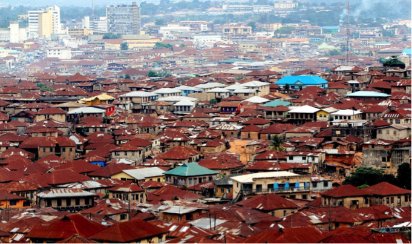

SCROLL DOWN
Ibadan, The Capital of Oyo State
Ibadan, the capital city of Oyo State and the third largest metropolitan area in Nigeria, after Lagos and Kano is 128 km inland northeast of Lagos and 530 km southwest of Abuja, the federal capital. It is a prominent transit point between the coastal region and the areas to the north. Ibadan has a tropical wet and dry climate, with a lengthy wet season and relatively constant temperatures throughout the course of the year. Ibadan’s, wet season runs from March through October, though August sees somewhat of a lull in precipitation. This lull nearly divides the wet season into two different wet seasons. The remaining months forms the city’s dry season. Ibadan is highly exposed to flooding. The city has a population of 3 million and a growth rate of 3.4% (City of Ibadan, 2013). It is the largest metropolitan geographical area in West Africa (1,190 sq mi or 3,080 km2) with a highly built up and dense population. The city is frequently exposed to floods.
History of Flooding in Ibadan
The historical date of the first flooding in Ibadan has been a subject of debate while Tomori recorded that the first flooding occurred in Ibadan in 1902, Etunovbe, 2011; Ajayi et al 2012; Akintola, 1981, recorded that flooding has been a recurrent decimal in Ibadan with recorded occurrences in 1948, 1955, 1961, 1963, 1978, 1980, 1985, 1987 and 1990 with the major sources of this flooding being Ogunpa and Kudeti streams. Ibadan has recorded varying degrees of flooding. For instance, there were flooding in the watersheds of Ogunpa and Kudeti streams (one of the two major streams in Ibadan) in 1955, 1960, 1961, 1963, 1969, 1978 and 1980. The flooding of 1969 is unique because it resulted from a mere 25.4 mm rainfall. Eleyele Dam is the source of drinking water for the part of the city of Ibadan that the Water Corporation of Oyo State water pipe lines serves.
Built on the Ona River, Eleyele Dam has a total length of 244 meters and was constructed at Eleyele in 1942. The dam was constructed to supply raw water for treatment at the Eleyele Waterworks and for flood controls during high flow periods through its reservoir holding capacity. In the aftermath of the August 26, 2011 devastating flood in the city, Eleyele Dam was one of the major hydrological devices that were ravaged by the flood.

Flooding
Nigerian cities have experienced great physical development, in terms of building,
manufacturing industries and others without any appreciable infrastructures such as
drainages, roads and canals to support them. These have made floods to be a very serious
challenge that plague many Nigerian cities. The vulnerability of a place on the earth
surface to flood is a function of the region’s exposure to the hazard (natural event) and
the anthropogenic activities carried out within the catchment area, which impedes the free
flow of water .
 Flood is among the most devastating natural hazards in the world claiming
lives and properties. Nigeria has lost a lot of lives and properties worth millions of naira
in the last three (3) decades, directly or indirectly to flood. Reducing the impact of flood
can be successful only when detailed knowledge is obtained about the expected
frequency, character and magnitude of hazardous events in an area as well as the
vulnerability of people, buildings, infrastructures and economic activities in a potential dangerous area.
Flood is among the most devastating natural hazards in the world claiming
lives and properties. Nigeria has lost a lot of lives and properties worth millions of naira
in the last three (3) decades, directly or indirectly to flood. Reducing the impact of flood
can be successful only when detailed knowledge is obtained about the expected
frequency, character and magnitude of hazardous events in an area as well as the
vulnerability of people, buildings, infrastructures and economic activities in a potential dangerous area.

Causes of Flooding
A lot of research has been carried out to ascertain the causes of flooding and different
reasons have been identified, such include: dumping of refuse over the years has led to
the filling up of ponds and blockages of other natural water ways or drainages; high
intensity rainfall coupled with a gentle slope for water accumulation; dam failure coupled
with almost bare surface; rapid rate of unplanned settlement leading to poor drainage
system among many others. The waste generated within Ibadan metropolis comprises
mainly of leaves, paper, food waste, tins, glass wares, building construction waste and
rags. This is because Ibadan is located in the heart of a rich agricultural land and has a
large old and unplanned section. Generally, wastes are being dumped indiscriminately in
the city by the populace; in several part of the city wastes are dumped on side drains,
roads, streams, canals, open land spaces and bushes. This practice has contributed to the
frequent occurrence of flooding in the city. Government has made some efforts to clean
up the city through Oyo State Waste Management Authority (OYOSWMA) but there is need for more action to be taken.
There are some dump sites that are around surrounding built up areas that will be potentially affected by flooding.